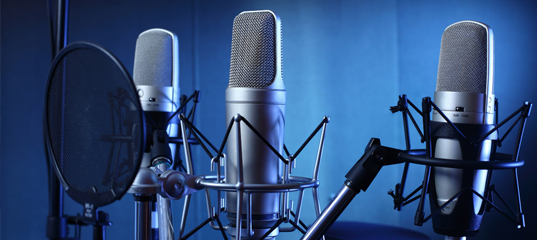
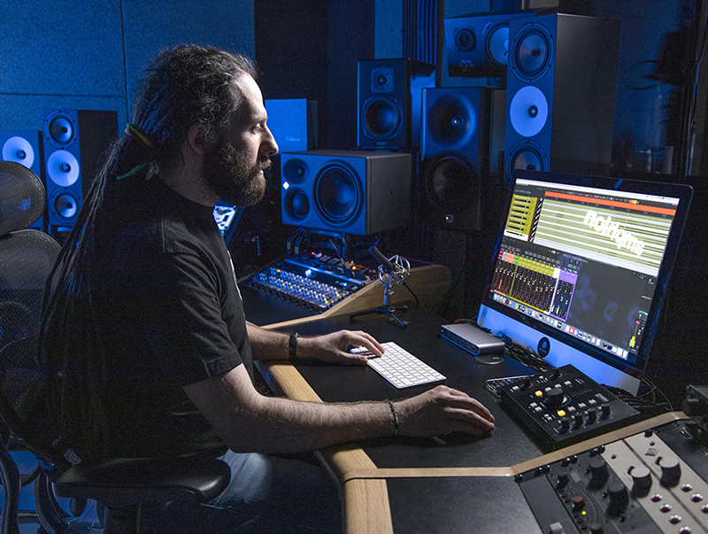
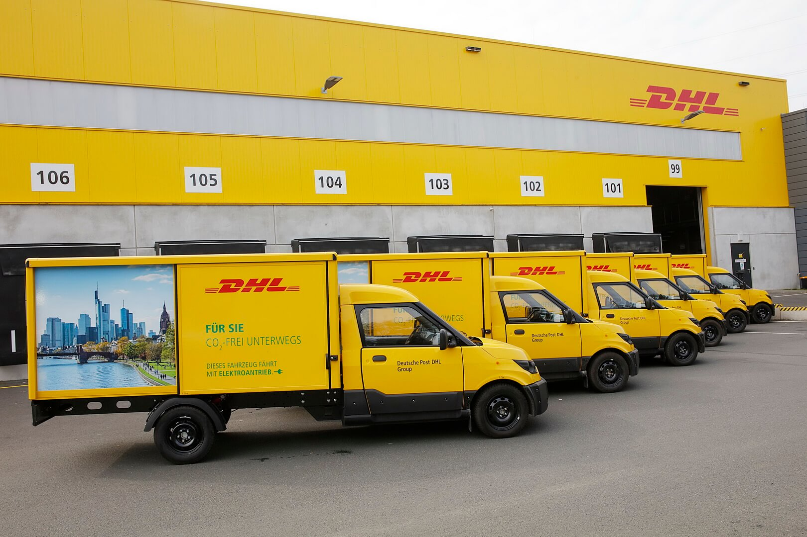

🌟 Опыт и профессионализм
MicroStore - это надежный партнер для звуковых мастеров, студий звукозаписи, музыкантов и вокалистов всех уровней мастерства. От новичков до профессионалов, мы всегда готовы предложить наилучшие решения для качественной записи звука.
🔍 Богатый выбор
В MicroStore вы найдете самые современные и популярные модели микрофонов от ведущих мировых производителей, таких как Shure, Neumann, Rode, Audio-Technica и многих других. Независимо от того, ищете ли вы конденсаторный микрофон для студии, петличку для видеоблога или радиосистему для выступлений вживую - мы всегда готовы помочь вам найти идеальное решение.
💡 Экспертное консультирование
Наша команда профессиональных звуковых инженеров всегда готова помочь вам выбрать подходящий микрофон в соответствии с вашими потребностями и бюджетом. Мы с удовольствием поделимся своими знаниями, чтобы вы могли сделать информированный выбор.
🚚 Быстрая доставка и гарантия
MicroStore гарантирует оперативную доставку, чтобы вы могли получить свой новый микрофон в кратчайшие сроки и начать творить. Мы также предлагаем гарантию на все наши товары, давая вам уверенность в их качестве и надежности.
MicroStore - это место, где ваша аудио-мечта становится реальностью. Посетите нас сегодня и откройте для себя удивительный мир профессиональной звукозаписи!